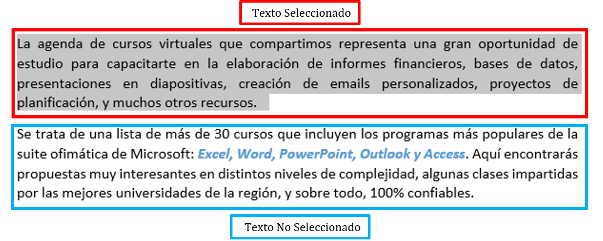
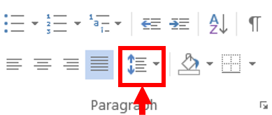
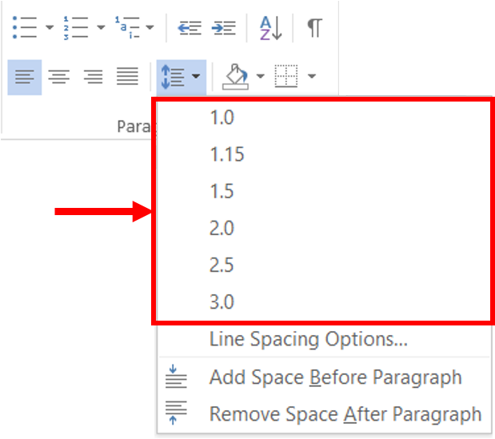
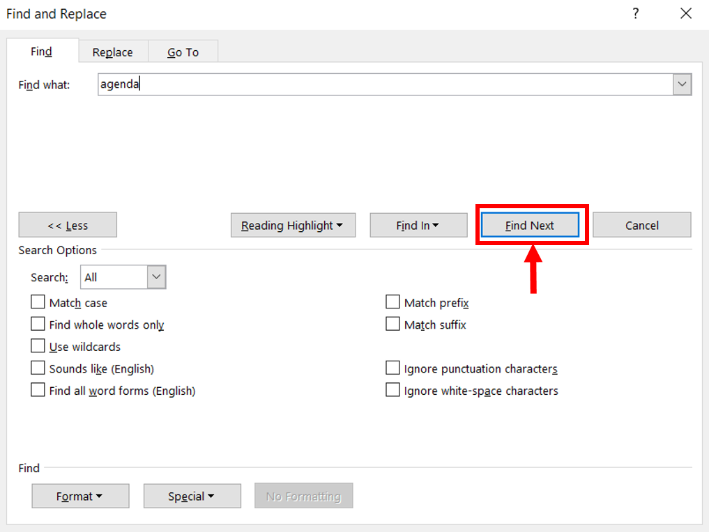
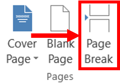
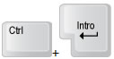

Realizar Funciones Específicas
Hay otras funciones que tiene Word:
El espacio entre líneas o interlineado es el espacio que existe entre una línea y otra.
Microsoft Word permite modificar dos tipos de espaciado:

Los pasos para modificar el espacio entre líneas y párrafos es:
- Seleccione el texto al cual le desea modificar el espacio entre líneas.
- Vaya al menú "Inicio" (Home) a la sección de "Párrafo (Paragraph)".
- Abra el submenú del comando "Interlineado" (Line spacing).
- Le aparecerá una lista con los diferentes tipos de interlineados, seleccione el que desee aplicar.



Buscar y remplazar texto son funciones cuyo uso se extiende sobre todo en documentos largos, en los cuales es difícil encontrar una palabra o conjunto de caracteres.
Ejemplo:
Suponga que en el documento que está elaborando debe realizar una búsqueda de la palabra verde para remplazarla por la palabra amarillo.
Los pasos para buscar y remplazar texto son:
- Lo primero es buscar la palabra que se va a reemplazar.
Vaya al menú de "Inicio" (Home) y busque en el grupo de Edición (Editing) el comando "Buscar" (Find).
También puede utilizar la combinación de teclas CTRL + F.
Después, de clic en Búsqueda Avanzada (Advanced Find...).
- Aparecerá una ventana con las opciones a seleccionar.
En el área de "Buscar" (Find), escriba el texto a buscar. - En la sección "Opciones de búsqueda" (Search options) se tienen varias opciones para mejorar nuestra búsqueda, y son:
- Hacia delante (up): La búsqueda comienza del punto en donde está el punto de inserción hacia delante.
- Hacia atrás (down): La búsqueda se hace del punto en donde está el punto de hacia atrás del documento.
- Todo (all): Búsqueda en todo el documento.
- Coincidir mayúsculas y minúsculas: También puede definir si es necesario coincidir mayúsculas y minúsculas: localiza el texto que coincida exactamente letra por letra.
- Sólo palabras completas: Solamente encuentra el texto si éste está formando una palabra completa.
- Usar caracteres comodín: Se le indica a Microsof Word que el texto que se puso para buscar incluye caracteres que se usan como comodín. El carácter de comodín que se utiliza es "?". Si se utiliza, Microsoft Word considera que en el lugar del comodín puede ir cualquier letra.
- Suena como (sounds like): Solamente funciona con texto en inglés.
- Todas las formas de la palabra: Microsoft Word busca la palabra independientemente de la forma en que esté conjugada. (Sólo funciona con el idioma inglés).
- Con el botón de "Buscar Siguiente" (Find Next) se busca la siguiente palabra que cumpla las características de la búsqueda que usted defina.



Un "Salto de página" (Page break) obliga al texto que esté después de él, a comenzar en la siguiente página.
Existen dos tipos:

Los pasos para insertar un salto de página son:
- Coloque el cursor en el lugar en donde desee insertar el salto de página.
- Vaya al menú de "Insertar" (Insert) en el grupo de Páginas (Pages) y busque el comando "Salto de Página" (Page Break).
- De clic para insertar el salto de página.

Otra forma de insertar un salto de página es:
- Coloque el cursor en el lugar en donde desee insertar el salto de página.
- Presione la siguiente combinación de teclas: CTRL + Enter.
